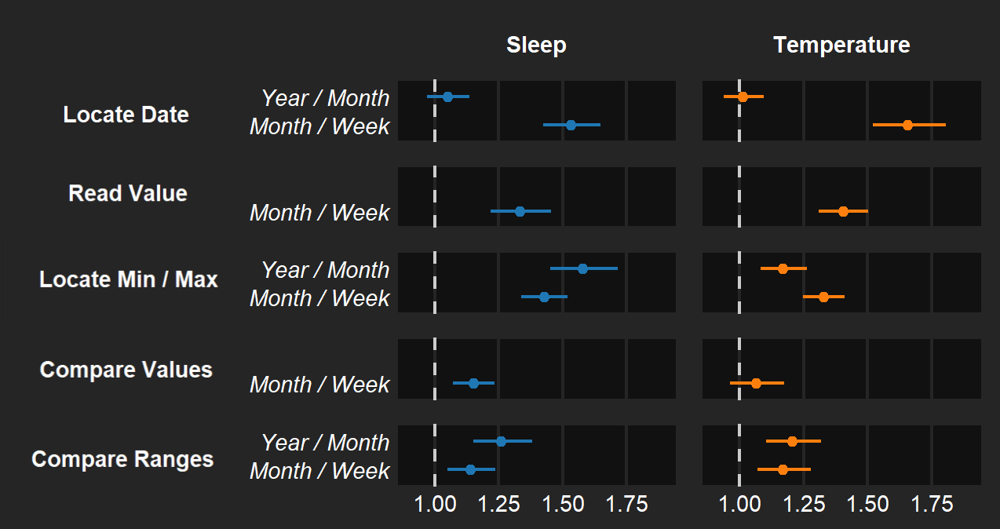
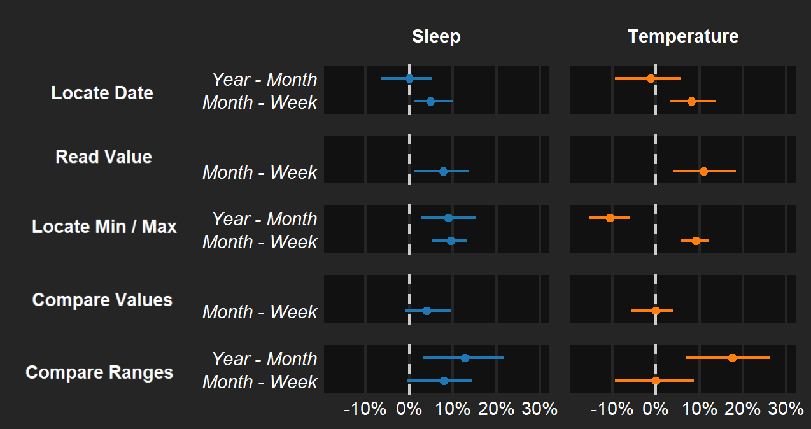
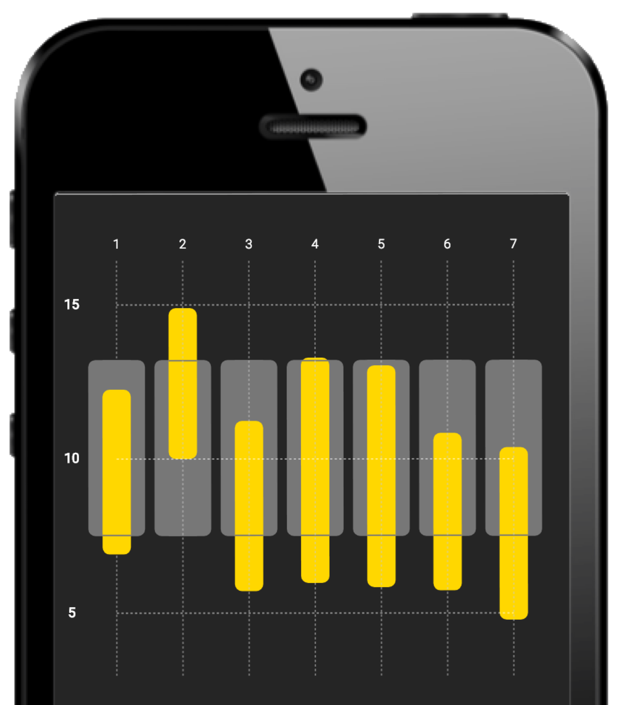

image: The New York Times (June 4, 2017)
The next time you pick up the print edition of The New York Times, turn to the weather page; here you'll see temperature ranges over time. Highs and lows for the last five days and the next five days are superimposed over average and record temperature ranges for 22 American cities, and you'll also get a full month of temperature ranges for New York City itself.
image: Randy Olson (2015) for fivethirtyeight.com
Or the next time you ask the question "was this past year warmer or more erratic than usual?", you might encounter a chart like one by Randy Olson, overlaying observed and average ranges for every day of an entire year. These charts are fairly conventional when it comes to weather reporting, but they certainly aren't limited to the weather domain.
image: Eric Boam's 7 Months of Sleep
Consider Eric Boam's "7 Months of Sleep" project, in which every day has a range indicating the hours slept, with bedtimes at the top and waking times the next morning at the bottom. And as with temperature data, the range marks are superimposed, in this case sleep is superimposed over the time spent in bed but not necessarily sleeping.
images (clockwise from left): The New York Times · Eric Boam · Randy Olson
These examples work well in print and when shown on large displays, but that's not how many of us now consume weather data or personal health and activity data, such as sleep duration. Instead, these and several other sources of range data are likely to be consumed from a mobile device.
Ranges in Weather Apps
apps: Dark Sky © · Weathertron © · Weather Line ©
There are weather apps like Dark Sky, Weathertron, and Weatherline that display ranges for 7 or 10 days or aggregated across 12 months.
Ranges and Radial Layouts
images: Weather Radials (by Timm Kekeritz)The Book of Circles (Manuel Lima, 2017)
The other central question of our work relates to the linear convention used when visualizing ranges over time. Time is also cyclical; we experience seasons, lunar cycles, and weekday/weekend routines. The cyclicality of time is exemplified in work like Tim Kekeritz's Weather Radials, or in a number of radial range charts featured in Manuel Lima's Book of Circles.
images: mobileinfovis.com (by Sebastian Sadowski, 2018)
But are these designs appropriate for mobile displays? Bear in mind that mobile app and website designers appear to be quite fond of radial layouts, as illustrated in a survey by Sebastian Sadowski.
A Crowdsourced Experiment on Mobile Phones
image: flickr/newkemall (cc by)
The answer to how many ranges can be fit into mobile display and to whether you should use a linear or radial layout is of course, "it depends on the data and the task". We know this because we conducted a crowdsourced experiment in which we asked crowd workers to perform a set of different tasks on their mobile phone.
Our experiment involved both linear and radial layouts, as well as three granularities of time: a week of 7 seven ranges, a month of up to 31 ranges, and a year of 365 ranges.
Data: Temperature (Left) and Sleep (Right) Ranges
data sources: (L) wunderground.com + intellicast.com (temperature) · (R) redd.it/1c1sah (sleep)
Given the prevalence of ranges in weather and sleep tracking applications, we opted to use a year of daily temperature range data from a temperate American city known for its seasonal fluctuations, as well as a year of real bedtime and waking time data from a diligent quantified selfer on the r/datasets subreddit.
Temperature (L) and Sleep (R) Range Encoding, Explained
It's also important to note that the quantitative scale for a linear layout is different for these two data types, owing to the weather reporting convention that warmer temperatures are higher in a chart and that later times are lower in calendars. The color encoding reinforces this difference. We also provided different semantic cues for these two datatypes, which included different wordings in task instructions and different iconography. As a result, we divided our participants into two groups, one for temperature ranges and one for sleep ranges. We did not directly compare the results of the two groups due to these confounds. They should be seen as separate experiments.
5 Experimental Tasks
Locate Dates
Read Values (on an indicated day)
Locate Min / Max Values
Compare Values (on an indicated day)
Compare Ranges (between two indicated date spans)
Using an existing visualization task typology as a framework, we designed 5 experimental tasks, having increasing difficulty and completed in order, though within each task we counterbalanced the presentation of layout and granularity, with several trials for each combination.
These tasks included locating dates,
reading values on indicated dates,
locating extreme range values, comparing observed and average range values on indicated dates, and comparing spans of observed and average ranges.
comparing observed and average range values on indicated dates,
and comparing spans of observed and average ranges. For the two comparison tasks, we presented participants with a fixed set of 3 response options.
For the other tasks, participants had to select a region on the chart. We did not intend for this experiment to be about fine-grained interaction, so this selection was deliberately imprecise: we asked participants to contain the correct response within a dashed region that followed their touch point, and this region spanned between 1/7th and 1/12th of the possible response domain, depending on the granularity; in other words, they didn't need to exactly touch the correct value. After containing their response with this dashed region, they had to tap on a ‘done' button to proceed to the next trial.
Data We Collected:
For each trial :
At each level of granularity :
icons: fontawesome.com
So we collected both completion time and response accuracy for each trial, and at the end of the experiment, we asked participants about their preference and their overall confidence in their responses for each combination of layout and granularity.
100 Participants
Temperature (N = 50), Sleep (N = 50)
84 trials per participant, 20 - 25 minutes to complete full experiment
icons: fontawesome.com
We recruited 100 participants from Mechanical Turk's U.S. crowd worker population, split evenly into a temperature range group and a sleep range group. They only had one opportunity to perform the experiment in its entirety, which took between 20 and 25 minutes. They had to use a mobile phone running a recent version of iOS or Android and either the Chrome or Safari mobile browser.
Results from 87 Participants
Temperature (N = 40), Sleep (N = 47)
3,337 Temperature group trials; 3,926 Sleep group trials
icons: fontawesome.com
We excluded results from 13 participants, due to non-completion, non-compliance, or for failing to correctly respond to quality control trials distributed throughout the experiment, leaving 40 participants in the Temperature group and 47 participants in the Sleep group. Trial completion time varied by task, layout, and granularity, but overall participants completed individual trials in less than 5 seconds per trial. The error rate was similarly varied across tasks, layouts, and granularities. We calculated ratios in completion time and differences in error rate between the two types of layouts and between the 3 levels of granularity.
Radial / Linear completion time ratios
Note : Error bars are 95% Confidence Intervals
Let's first consider ratios in task completion time between linear and radial layouts, where the error bars here are 95% confidence intervals, and in cases where the confidence interval crosses a completion time ratio of 1 (the white dashed line), we interpret these as cases where layout has little or no effect. Given our results, people tend to complete comparison tasks in about the same amount of time with either layout, but for tasks that require locating values, people tend to be slower with radial layouts, irrespective of the source of the data, especially when reading values for an indicated day.
Radial - Linear error rate differences
Note : Error bars are 95% Confidence Intervals
However, radial layouts don't seem to incur accuracy costs, at least with temperature range data, where there tends to be a lot of seasonal variation. With sleep range data, which exhibits no seasonal variation, people are less accurate when reading values for indicated dates or when locating extreme values.
Interpreting Radial vs. Linear performance differences
Note : dimensions of an iPhone 6 (w = 375 pt) with a device-pixel ratio of 2x and 12.5% margins
The difficulty in reading range values for indicated dates may be due to the fact that the quantitative domain in a radial layout is compressed to half of the chart area, from the center to the periphery, thus putting it at a disadvantage relative to a linear layout, where the quantitative domain spans the entire height of the chart, so individual marks are twice as tall. We kept the chart size constant between the two layout conditions, but it would be interesting to repeat our experiment in which mark size is kept constant instead of chart size, which would involve a linear range chart that was half the height of the charts used in our current experiment.
No advantage at the periphery relative to the center
Our findings also suggest that it does not make a difference whether the task has to do with the beginning or end of the range. We had speculated about whether the increased chronological resolution around the periphery of a radial layout would contribute to better performance for locating and reading values at the periphery, and conversely whether the cluttered center of a radial layout would incur worse performance. People tended to be slower with a radial layout irrespective of whether the task asked them about the start or end of the range, there were no pronounced differences in accuracy in this regard.
Radial or Linear?
People are, in general, slower with Radial layouts.
Only in some data + task contexts are people less accurate.
People prefer (and are more confident) with Linear layouts
So you might be wondering if our results contribute another nail in the coffin so to speak for radial layouts in general, this despite their popularity in practice and design communities. It's tempting to say this but our results are somewhat more nuanced. Yes, people tend to be slower with radial layouts, and only in value reading task contexts are they less accurate. It's also worth remarking that participants universally preferred linear layouts, and they felt more confident using linear layouts relative to radial ones.
Layout does not appear to affect comparison performance
Yet, If the task is primarily about comparing ranges values or comparing spans of observed and averages ranges, like comparing whether the observed temperatures in one month were more aligned with average temperatures relative to some other month, it doesn't appear to matter whether you use a linear or radial layout, at least in terms of accuracy.
Radial layouts for other tasks?
animation: Ed Hawkins' Climate Spirals
It's also entirely possible that there are tasks other than those we considered where a radial layout has an advantage or performance parity with a linear layout, such as in year-over-year comparisons like in Ed Hawkins' Climate Spirals - though to determine this we may need to revisit our choice of encoding and consider the use of paging, scrolling, or animation, at which point performance depends on memory as well as perception. Nevertheless, there are opportunities for additional future research in this area.
Our other primary question in this work is how many ranges can you fit in a mobile display and still retain reasonable task performance, such as when you jump from a week of 7 ranges to a month of 31 ranges to a year of 365. You might expect that adding more marks in a chart will incur worse performance, but this is not what we saw.

Completion time ratios between granularities
Note : Error bars are 95% Confidence Intervals
As you might expect, people were slower with a month ranges than with a week of ranges, and in some instances the ratios in completion time from a week to a month was greater than from a month to a year.

Accuracy differences between granularities
Note : Error bars are 95% Confidence Intervals
With regards to accuracy, the jump from a week to a month only incurred noticeably worse performance when locating extreme values. Interestingly, there were cases where people were as accurate or even more accurate with a year of ranges than with a month of ranges, particularly among those looking for extreme temperatures. It is in this respect that we observed different results between the temperature and sleep range groups, where the expected annual trend of temperature ranges appears to make the task easier relative to examining a month of temperature ranges.
Temperature and Sleep don't follow Monthly cycles
One interpretation of our results is that a month may not be an appropriate granularity for either temperature ranges or sleep ranges, since temperatures follow an annual cycle, not a monthly one, and we tend to have a weekly sleep routine across weekdays and weekends, as opposed to a monthly sleep routine. It is possible that other sources of range data are more appropriate to display at a monthly granularity, such as lunar or tidal cycles.
Selecting an appropriate layout and granularity
Is a cycle meaningful in the context of the data?
Is the task involve locating values? Or comparing them?
Is efficiency the primary consideration?
video: flickr/50663863@N02 (cc by)
Ultimately, the questions of which layout and which granularity to display are really questions about congruence with the data and task. You should ask whether a cycle is meaningful in the context of the data, whether the task is about locating values or comparing values, and whether task efficiency is the first priority.
Our findings only apply to mobile contexts
image: flickr/newkemall (cc by)
It's important to stress that our results and how we interpreted them in terms of implications for design should in no way be used to inform the visualization of ranges over time in non-mobile contexts. Our experiment was conducted exclusively on mobile phones and we can only speak to that form factor.
Nor do our results allow us to comment on the experience of interacting with range charts with different layouts and granularities. We designed the response mechanism in each task to be fairly simple, without requiring precise selection or the entering of responses into text fields.
Beyond temperature and sleep range data

The design of experiments such as ours aim for a balance between external validity and control over potential confounds. In light of our results and the possible differences between participants who saw temperature data and those who saw sleep data, a potentially informative follow-up experiment would be to remove the semantic cues from the charts and the task wording, to use synthetic data, or to repeat the experiment with other sources of range data, such as heart rate or blood pressure.
The role of personal data and lived experience
image: Eric Boam's 7 Months of Sleep
Another direction to consider is the engagement of the participants with respect to their lived experience of the data being shown: what would our task performance results look like if participants were looking at their own sleep data? Or if they were looking at temperature data from where they lived? Perhaps what is needed here is a deeper engagement between visualization researchers and the quantified self community, with people who already have a keen interest in tracking and analyzing their personal data, particularly when that data is consumed from a mobile phone.
Visualizing Ranges Over Time on Mobile Phones
Matthew Brehmer · Microsoft Research · @mattbrehmer
(mobile only) experimental app: aka.ms/ranges github.com/microsoft/RangesOnMobile mattbrehmer.github.io/talks/ranges
IEEE VIS 2018 · video: flickr/notthisorthat (cc by-nc)
To this end, our experimental application is available under an MIT open source license, and you can still experience our experiment on your own phone at aka.ms/ranges. We also invite you to engage with us, to provide feedback and ideas with respect to future research directions for visualization on mobile devices.
 IEEE VIS 2018 · slides: mattbrehmer.github.io/talks/ranges · video: flickr/notthisorthat (cc by-nc)
IEEE VIS 2018 · slides: mattbrehmer.github.io/talks/ranges · video: flickr/notthisorthat (cc by-nc)
 image: Eric Boam's 7 Months of Sleep
image: Eric Boam's 7 Months of Sleep
 images (clockwise from left): The New York Times · Eric Boam · Randy Olson
images (clockwise from left): The New York Times · Eric Boam · Randy Olson
 apps: Dark Sky © · Weathertron © · Weather Line ©
apps: Dark Sky © · Weathertron © · Weather Line ©
 apps: Azumio Sleep Time © · Garmin Connect © · Bedtime (iOS Clock) ©
apps: Azumio Sleep Time © · Garmin Connect © · Bedtime (iOS Clock) ©

 images: Weather Radials (by Timm Kekeritz) © · The Book of Circles (Manuel Lima, 2017)
images: Weather Radials (by Timm Kekeritz) © · The Book of Circles (Manuel Lima, 2017)
 images: mobileinfovis.com (by Sebastian Sadowski, 2018)
images: mobileinfovis.com (by Sebastian Sadowski, 2018)


 data sources: (L) wunderground.com + intellicast.com (temperature) · (R) redd.it/1c1sah (sleep)
data sources: (L) wunderground.com + intellicast.com (temperature) · (R) redd.it/1c1sah (sleep)
 Radial - Linear error rate differences
Note: Error bars are 95% Confidence Intervals
Radial - Linear error rate differences
Note: Error bars are 95% Confidence Intervals
 Note: dimensions of an iPhone 6 (w = 375 pt) with a device-pixel ratio of 2x and 12.5% margins
Note: dimensions of an iPhone 6 (w = 375 pt) with a device-pixel ratio of 2x and 12.5% margins

 animation: Ed Hawkins' Climate Spirals
animation: Ed Hawkins' Climate Spirals